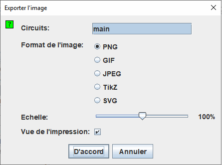

Exportation d'images
Lorsque vous sélectionnez | Exporter l'image ... |, Logisim affiche une boîte de dialogue contenant quatre options.

Configuration de l'exportation
- Circuits: Une liste où vous pouvez sélectionner un ou plusieurs circuits devant être exportés dans des fichiers images.(Les circuits vides ne sont pas affichés comme options.)
- Format de l'image: Vous pouvez créer des fichiers PNG, GIF, JPEG, TikZ et SVG. Je recommande les fichiers PNG: Le format GIF est un peu obsolète et le format JPEG introduira des effets dans l'image, car le format JPEG est vraiment destiné aux images photographiques.
- Echelle:Vous pouvez mettre à l'échelle les images au fur et à mesure de leur transfert dans les fichiers à l'aide de ce curseur.
- Vue de l'impression: Modifie le style de l'image produite avec les informations d'état ou seulement le schéma.

Cette option est aussi disponible dans les "préférences d'application" dans l'onglet disposition. Cela modifiera l'affichage dans l'espace de travail.
Après avoir cliqué sur D'accord , Logisim affichera une boîte de dialogue de sélection de fichiers. Si vous avez sélectionné un seul circuit, donnez un nom de fichier ou sélectionnez le fichier dans lequel l'image doit être sauvée. Si vous avez sélectionné plusieurs circuits, sélectionnez un répertoire dans lequel les fichiers doivent être placés. Logisim nommera les images en fonction des noms des circuits ( main.png , par exemple).